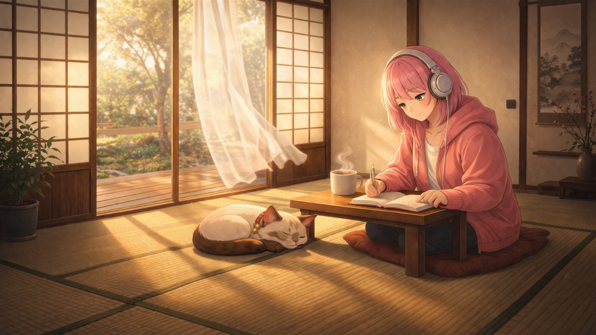
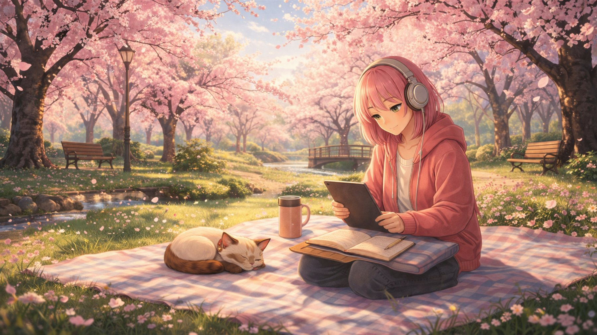
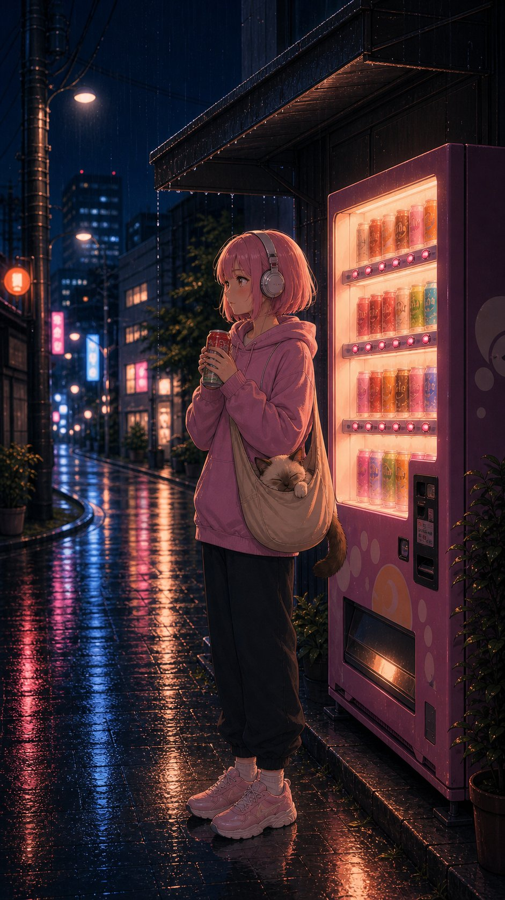

Episode 01 | Published
Rainy Cafe
Cozy rainy cafe night; quiet companionship and reflective calm.
Follow Nagi and Kumo through rainy cafes, tatami mornings, sunset train rides, and soft study worlds built for sleep, work, focus, and calm.
NagiKumo ChillFi is built as a Season 1 journey, not a loose upload folder. Each episode has a place, mood, source image, music direction, and animation plan.
The sound is modern Japanese lo-fi pop rap instrumental: J-pop inspired chords, lo-fi rap bounce, soft 808 bass, Rhodes, koto, shamisen, shakuhachi, subtle taiko, vinyl warmth, and no vocals.
Shy, quiet, reflective, intelligent, genuine, and slowly evolving from scene to scene.
Calm, curious, companionable, usually sleepy, and never chaotic.
Static camera, subtle loops, rain, steam, warm lights, breathing, tiny resets, and no dramatic action.
The first season moves through cozy rain, morning stillness, gentle travel, study spaces, spring air, city rooftops, temple rain, snow, and airport nights.
Cozy rainy cafe night; quiet companionship and reflective calm.

Soft morning interior, rain texture, grounded calm.
Warm train-window lo-fi with quiet observation.

Spring picnic warmth, soft petals, and gentle focus.
The working system tracks music runtime, source-image animation loops, approvals, and edit readiness. The current bottleneck is not ideas; it is turning each episode into a finished one-hour atmosphere with approved music and loops.
Published and reoptimized around Japanese rain ambience, study, sleep, and focus keywords.
Ready for Tony approval before movement or editing.
Music and image-to-video loops are the main workstream before edit readiness.
The page can become a lightweight blog from inside the NagiKumo world: not production notes only, but small entries from the places they pass through.
The first published world sets the channel language: rain on glass, warm cafe light, Nagi studying quietly, and Kumo sleeping nearby.
The morning episode is staged as the softer counterpart to Rainy Cafe: low rain, teacup steam, warm floor, and a day that does not need to rush.
The short-form world follows smaller moments: street rain, vending-machine glow, warm hands, and Kumo tucked close while the city stays quiet.

NagiKumo ChillFi is growing into a season of quiet places: long-form lo-fi episodes, rain ambience, calm shorts, and character-led scenes built to loop without demanding attention.